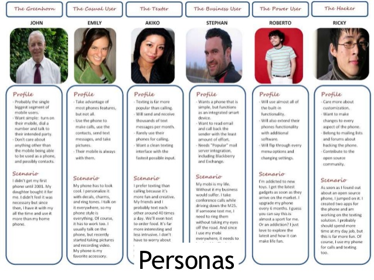
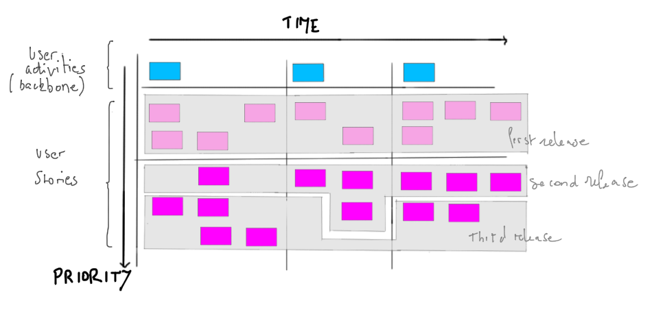

A user story is a tool used in Agile software development to capture a description of a software feature from an end-user perspective. It's a very high level definition of requirement, containing just information so than developers can produce a reasonable estimate of the effort to implement it The user story describes the type of user, what they want and why. A user story helps to create a simplified description of a requirement.
A user story typically follow a simple template:
As a <type of user>, I want <some goal> so that <some reason>.
User stories can be written on cards or sticky notes, stores on walls or tables to facilitate planning and discussion.
They can be written at varying levels of detail from a high-level strategic viewpoint (typically at Feasibility) through to a more detailed, implementable level (typically during Exploration and Engineering). The large user stories are generally known as epics. The epic is usually split into smaller user stories independent from one another so the team can worked on.
Persona and user needs
Since the user story involves a type of user, even before writing the first user story, the product team had to work on a profile for typical product users. Such a profile looks like a short biography ; it explains the motivations guiding the user's actions and it's called a Persona. During the same product definition phase, the product team listed the needs of each of the personas. They selected the needs to be addressed by the product, and left the other needs aside.

Priorization
They can be estimated/prioritized with:
- Sequence numbers (simple, Fibonacci)
- T-shirt sizes (e.g. S, M, L, XL)
- Traffic lights (green, yellow, red)
- Starbucks drink sizes (demi, short, tall, grande, venti, trenta)
- A Moscow categorization : MoSCoW stands for:
- Must have (or Minimum Usable Subset)
- Should have (not critical but important)
- Could have (wanted or desirable but less important)
- Won’t have this time (explicitly excluded from scope for the planned duration but Would like in future)
Using user stories to build a roadmap
Story Maps
User story mapping is a technique allowing to see the big picture of the backlog and helping making decisions about grooming ans prioritizing the backlog, managing scopes.
See How to create a User Story Map

The high level user stories (blue post-its) are the epics. They can be split into smaller user stories which forms the "walking skeleton" of the map.
The user stories (pink post-its) are organized under each epic in order of highest to lowest priority for that feature.
The chronological order of how users will typically use the application goes left to right (Time).
Product Tree
The product tree is a game board representing a tree organizing features to help teams to collaboratively develop roadmaps and strategic plans with customers.
The product tree is build during a "Prune the Product Tree" game where players draw limbs and locate post-its (user stories) on them.
Leaves represents user stories.
The roots represents the requirements (dev team, infra, etc.).
Thick limbs represents major areas of functionality (or epics).Thin limbs can be drawn from thick limbs as guides to be more specificic (themes).
The goal of the product tree is to build a well balanced tree by "pruning the tree" of unnecessary limbs or at the opposite adding new (missing) leaves.
Other techniques of visualizations
Visualizing a Large Product Backlog With a Treemap
Stuck in the Details? Mind Map User Tasks